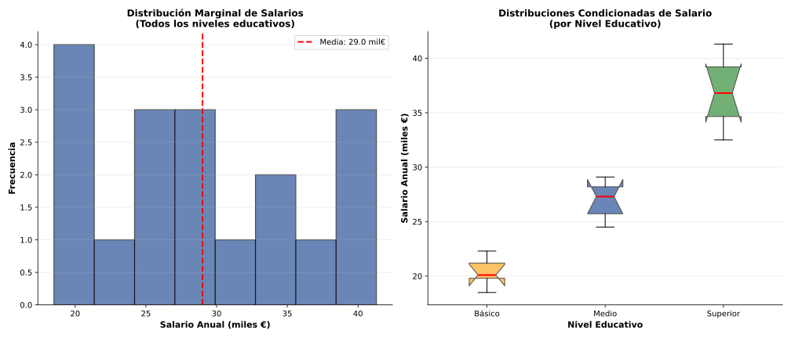
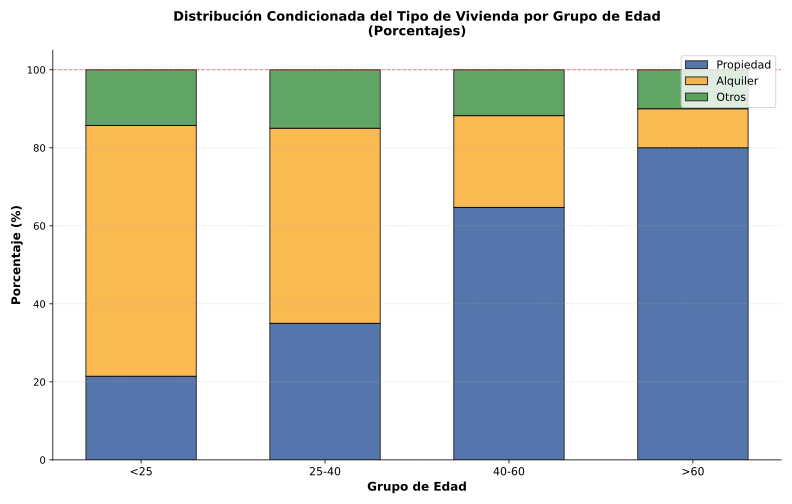

Sesión 2: Distribuciones Marginales y Condicionadas
🎯 Objetivos de la Sesión
Obtener distribuciones marginales a partir de una distribución conjunta
Calcular distribuciones condicionadas para valores específicos de una variable
Calcular parámetros estadísticos de distribuciones marginales y condicionadas
Comparar medias y desviaciones típicas condicionadas
📚 Contenidos Teóricos
1. Distribución Conjunta
Cuando trabajamos con variables bidimensionales \((X, Y)\), la distribución conjunta muestra todas las combinaciones posibles de valores de ambas variables junto con sus frecuencias.
Distribución Conjunta: Tabla que muestra la frecuencia de cada par de valores \((x_i, y_j)\) en una variable bidimensional. Incluye todas las frecuencias absolutas \(n_{ij}\) o relativas \(f_{ij}\).
2. Distribuciones Marginales
A partir de una distribución conjunta, podemos obtener las distribuciones marginales de cada variable por separado, "ignorando" temporalmente la otra variable.
Distribución Marginal de X: Se obtiene sumando las frecuencias de cada valor de X sobre todos los valores de Y:
\[n_{i\cdot} = \sum_{j} n_{ij}\]
Distribución Marginal de Y: Se obtiene sumando las frecuencias de cada valor de Y sobre todos los valores de X:
\[n_{\cdot j} = \sum_{i} n_{ij}\]
Ejemplo: Tabla de contingencia de 100 trabajadores clasificados por Salario (X: Bajo/Medio/Alto) y Nivel Educativo (Y: Básico/Medio/Superior):
Salario (X)
Nivel Educativo (Y)
Marginal X
Básico
Medio
Superior
Bajo
20
15
5
40
Medio
10
20
15
45
Alto
2
5
8
15
Marginal Y
32
40
28
100
Interpretación:
Marginal de Salario: 40 personas con salario bajo, 45 con medio, 15 con alto
Marginal de Educación: 32 con nivel básico, 40 con medio, 28 con superior

3. Distribuciones Condicionadas
Las distribuciones condicionadas nos permiten estudiar el comportamiento de una variable cuando fijamos un valor específico de la otra.
Distribución de Y condicionada a X = xi:
Distribución de la variable Y cuando sabemos que X toma el valor xi. Las frecuencias son:
\[f_{j|i} = \frac{n_{ij}}{n_{i\cdot}}\]
Distribución de X condicionada a Y = yj:
\[f_{i|j} = \frac{n_{ij}}{n_{\cdot j}}\]
Ejemplo (continuación): Distribución de Nivel Educativo condicionada a Salario Bajo:
Para los 40 trabajadores con salario bajo:
Básico: \( \frac{20}{40} = 0.50 \) → 50%
Medio: \( \frac{15}{40} = 0.375 \) → 37.5%
Superior: \( \frac{5}{40} = 0.125 \) → 12.5%
Interpretación: Entre los trabajadores con salario bajo, el 50% tiene nivel educativo básico.

4. Parámetros de Distribuciones Condicionadas
Podemos calcular la media condicionada, varianza condicionada y otros parámetros para distribuciones condicionadas, lo que permite comparar el comportamiento de una variable bajo diferentes condiciones de la otra.
Ejercicio 3.2: Obtén la distribución condicionada del tipo de vivienda para el grupo 25-40 años.
Ver solución
Distribución de Tipo de Vivienda | Edad 25-40:
Total en grupo 25-40: 100 personas
Frecuencias condicionadas:
P(Propiedad | 25-40) = 35/100 = 0.35 (35%)
P(Alquiler | 25-40) = 50/100 = 0.50 (50%)
P(Otros | 25-40) = 15/100 = 0.15 (15%)
Interpretación: En el grupo de 25-40 años, el 50% vive de alquiler, siendo la opción mayoritaria en este rango de edad.
Ejercicio 3.3: Calcula el porcentaje de personas en alquiler para cada grupo de edad.
Ver solución
Porcentaje en alquiler por grupo de edad:
Grupo de Edad
% en Alquiler
Cálculo
<25
64.3%
45/70 = 0.643
25-40
50.0%
50/100 = 0.50
40-60
23.5%
20/85 = 0.235
>60
10.0%
5/50 = 0.10
Conclusión: El porcentaje de personas que viven de alquiler disminuye significativamente con la edad. Mientras que el 64.3% de los menores de 25 años alquilan, solo el 10% de los mayores de 60 lo hacen.
Ejercicio 3.4: Interpreta los resultados desde una perspectiva socioeconómica.
Ver solución
Análisis Socioeconómico:
Jóvenes (<25): Alta dependencia del alquiler (64.3%) debido a:
Menor capacidad económica para comprar vivienda
Inestabilidad laboral (contratos temporales)
Falta de ahorro acumulado para entrada de hipoteca
Adultos jóvenes (25-40): Periodo de transición (50% alquiler, 35% propiedad):
Estabilización laboral y económica
Acceso progresivo a hipotecas
Formación de familias incentiva compra
Adultos (40-60) y Mayores (>60): Mayoría en propiedad:
Acumulación de patrimonio a lo largo de la vida
Mayor estabilidad económica
Posibles herencias familiares
Implicaciones: Los datos reflejan la problemática del acceso a la vivienda en España, donde los jóvenes enfrentan barreras significativas para la compra de vivienda.
🚀 Bloque 4: Ampliación (5 min)
Problema Aplicado: Análisis de Uso de Transporte Público en Vigo
Contexto: Encuesta sobre uso de transporte público (Vitrasa) según barrio de residencia en Vigo. Se observan patrones de uso condicionados a la zona.
Pregunta de reflexión: Si el 80% de los residentes del Casco Vello usan transporte público, pero solo el 30% de los residentes de Samil lo hacen, ¿qué factores podrían explicar esta diferencia? ¿Es solo una cuestión de acceso o hay otros factores?
Ver análisis
Factores Explicativos:
Accesibilidad: Casco Vello tiene alta densidad de líneas y frecuencias; Samil está más alejado con menos opciones
Disponibilidad de aparcamiento: En el centro es limitado y costoso; en zonas periféricas es más accesible
Distancias: En el centro, muchos destinos son accesibles a pie o en bus; en zonas alejadas el coche es más práctico
Nivel socioeconómico: Posible correlación entre zona de residencia y poder adquisitivo (acceso a vehículo propio)
Perfil demográfico: Centro urbano más joven y estudiantil vs zonas residenciales familiares
Conclusión: Las distribuciones condicionadas revelan que el contexto geográfico y social condiciona fuertemente los comportamientos. Un análisis puramente marginal (uso global de transporte público) ocultaría estas diferencias importantes.